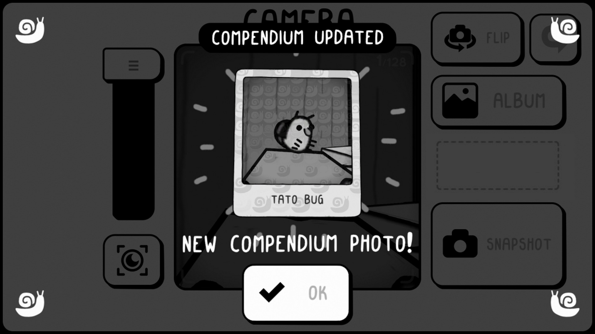
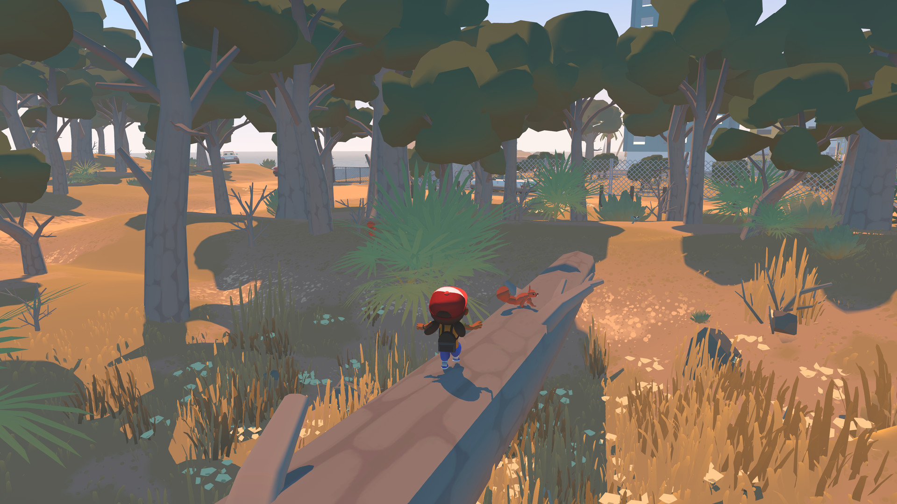
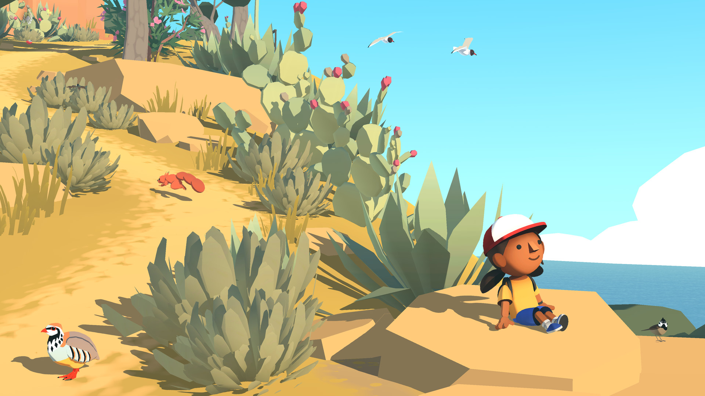

FIELD NOTES / ISSUE 002
风格化小世界的三种表达
本期目录 展开章节
游戏美术风格研究 · 2026-10-22（北京时间）· 约12–15分钟阅读 · 公开阅读镜像
本期看 A Short Hike、TOEM、Alba: A Wildlife Adventure 如何把复杂世界压缩成可读、可探索的小舞台。结论不是“多边形越少越省钱”，而是：减少表面噪声，把预算留给轮廓、空间和交互反馈。 对 Godot + DeepSeek harness（DSH）的个人开发者，最有价值的起点是一块可玩的营地，而不是一座完整开放世界。
本期最初以离线网页交付，现收入公开阅读镜像，供持续查阅。本镜像独立保存课程和参考图，不代表原站课程数据库已完成补录。
先分清三个概念
美术风格是形状、颜色、材质、线条和细节组织的规则；游戏类型是玩家做什么；视角是如何观察世界。“冒险”“俯视”“低多边形”不在同一层级。本期主题是“低细节、强轮廓的风格化立体小世界”，不是把三作都判定为同一种建模技术。
A Short Hike 的参考图有明显像素化边缘，但这不等于上一期的纯2D像素资产流程；TOEM 把手绘图形语言与立体空间结合，不应叫作普通彩色低多边形；Alba 的简化体块与平面色关系最接近常见的低多边形方向。本期因此覆盖3D空间与2D手绘表现的交叉，而非三个纯2D/纯3D各半的案例。系列会继续轮换媒介，不为凑比例错分作品。
下面的玩法背景来自官方页面；对情绪、视线、成本的判断是本期基于已核看截图的分析，不是开发者公布的生产数据。所有图都是开发者在 Steam 展示的真实游戏画面，不是AI示意；商店截图可能为展示构图或隐藏HUD，不等于每一帧日常游玩界面。没有核实的面数、着色器和动画帧数不作断言。
01 A Short Hike 秋色营地如何让人愿意停留
事实背景。 Adam Robinson-Yu 创作的山地探索游戏，玩家沿步道或自由探索，攀登并滑翔，目标是山顶。官方页面同时列有独立音乐创作者，不能把“个人主导”理解成完全无人协助。官方介绍

图1：官方 Steam 游戏截图。已核看：左侧红顶小屋；中央营火及两名角色；暖褐色岔路；松树、红黄阔叶树、右下水面与灰色山壁。来源：Steam 商店。
第一眼为什么温暖而不压迫
画面没有用大量柔光解释“温暖”，而是让黄绿草地、橙褐路径、橘红屋顶占大面积。冷色留给右下水面、深蓝主角和部分暗部，所以角色不必加一圈强光也能被找到。屋顶与红树是大色块，营火虽然小，却处于两个人物围合的中心。这里的情绪来自“可以停下来聊天的地方”，不是无差别地提高饱和度。
色彩引导不是唯一手段。路径从左下进入，在营地附近分叉；小屋门口接着木台，营火周围没有塞满草丛；岩壁从上方框住场景。玩家先看见可走的面，再看见值得接近的人。若把同样的高对比纹理铺满地面，这条顺序就会被打断。
形体和空间怎样省而不空
树冠分成尖锥松树与团块阔叶树，岩石以大面积明暗面表达厚度，小屋用倾斜屋顶、白门和暗窗维持辨识。角色身体很小，但帽子、鸟喙、身体主色保留了识别点。像素化呈现把许多微小细节合并为色块；它是统一画面的手段，不是掩盖所有建模问题的滤镜。
斜俯视构图同时交代可走地面、台阶和崖边。前景树、右下悬崖与后方山壁形成层次，中央活动区相对敞开。对探索游戏来说，可达与不可达的边缘比石头表面花纹更重要；树木一旦遮住路口，资产再漂亮也会制造无意的迷路。
UI 动画与玩法的关系
图1没有常驻HUD，不能据此断言游戏没有UI。它至少说明环境能承担一部分引导工作：门、路、篝火本身就是信息。动态研究可对照官方页面内的发布预告；本期未做逐帧视频测量，因此不声称奔跑、滑翔或粒子的具体时长。迁移到自己的作品时，可把行走与停止的反馈做成清楚的重心变化，探索提示尽量短，避免满屏粒子盖住路径。这是制作建议，不是对原作动画实现的猜测。
可借鉴与代价。 ①用三种大轮廓树型建立生物群落，代价是重复会更明显，要靠高度、组合与间距变化而不是随机上色补救。②把暖色集中在可停留节点，代价是其他区域需要不同的层级规则，否则所有营地都像任务终点。③先用地面颜色和路口轮廓引导，再加UI；代价是关卡迭代必须同时检查镜头与遮挡。不要只学“加像素滤镜”：在小屏下它可能让远处角色与提示更难读。
02 TOEM 不用颜色也能让世界有层次
事实背景。 Something We Made 将它定义为手绘摄影冒险，玩家用照片帮助角色并推进旅程；官网指出景观受斯堪的纳维亚启发。这是摄影/观察玩法与地域视觉线索，而不是“黑白就一定北欧”。官方介绍

图2：官方 Steam 游戏截图。已核看：斜俯视木屋院落，围栏、高台和楼梯说明地面高差，树的外轮廓与内部纹理粗细不同，人物上方有对话气泡。来源：Steam 商店。
黑白不是删除美术工作
第一眼像翻开一本带活动角色的旅行速写本。大量浅底让画面透气，木屋屋顶是上方最大的深灰块，围栏的重复黑线把不同高度的地面分开。人物虽然小，脸、帽子与气泡有明确轮廓。没有红色任务点并不等于没有强调：在这里，强调可以是局部黑白反差、孤立位置、线条粗细或文字气泡。
截图的草和树不是摄影式材质。树冠用重复波浪轮廓，树干用少数纵线，岩石只保留边界与大块阴影。细节聚集在物体表面，路面多数留白，这让人知道哪里可以移动。注意这张图右边树林线条很密，如果交互目标也塞在同样密度里，就需要额外的留白或轮廓分离。
镜头让平面线条变成可探索舞台
房屋正面、屋顶、楼梯踏步与地台共同提供深度线索，不能因为没有彩色光照就当成纯平面插画。画面边缘还有路线箭头，给离开当前区域的方向提示。它很适合把“寻找一个人或物”变成一小块场景内的观察题：范围受控，但细节值得看。
对小团队而言，“小场景分区”比无缝大地图更易管理；代价是每次切换和摄影视角都必须保证空间合理。把一张漂亮的等距概念图直接当成游戏场景，会在玩家换角度时暴露薄片、背面或遮挡问题。

图3：官方 Steam 游戏截图。可直接看到图鉴更新提示、相片卡、确认按钮以及被压暗的背景界面。此图用于UI分析，不把它当作野外场景截图。
UI 和世界使用同一种笔迹
相机界面使用粗边框、圆角大按钮、黑白图标，照片卡像纸片；这与场景的手绘轮廓属于同一种图形语言。图鉴新增时，背景压暗而相片变亮，把“我找到了什么”放在中心。相机不是独立悬浮的科技面板，而是摄影玩法的视觉延伸。小团队可以先做“观察—拍摄—收藏”三态UI，不急着造一套复杂手机系统。
动态资料可从官方 Steam 预告片区继续核对。本期只依据静态画面讨论UI层级，不把截图中的强调线当成已验证的运动轨迹。原创实现可用简短缩放或显隐完成收藏反馈，但应限制幅度，避免字和照片连续晃动影响阅读。
可借鉴与代价。 ①先建立3–4档灰度再画线，代价是没有色相帮助区分，需要更多轮廓测试。②给交互区域留白，代价是细节不能平均分配，必须主动删画。③UI与场景共享线宽家族，但正文文字仍使用清楚的字体；代价是不同分辨率下线宽会变，需要真实小屏检查，而不是照搬手绘字。
03 Alba 阳光下的简化自然为什么仍然可信
事实背景。 ustwo games 的作品围绕 Alba 在地中海岛屿探访祖父母、观察并帮助野生动物展开。其制作规模与个人主导的案例不同，本期将它作为完成度较高的团队参考，不假定个人能复制完整动物库和岛屿。官方介绍 · 官方商店

图4：官方 Steam 游戏截图。已核看：中央偏下的红帽角色站在倒木上；前方有松鼠；地面是暖黄褐色，树冠和草丛较暗，远景围栏与建筑透过树林显露。来源：官方 Steam 商店。
明亮不是把所有阴影抹掉
第一眼是有温度、可以亲近的自然，而不是逼真的野外生存。暖沙土与偏冷的树干、深绿树冠形成冷暖关系；角色帽子的红白块在暗林中突出。倒木从前景斜向中央延伸，既是路径也是视线导轨，松鼠落在这条线上。树冠密度高但顶部仍能看到天空，前后层次不会完全糊成一堵绿色墙。
角色使用大头、简化四肢和清楚的服装色块。树冠像组合团块，草叶像成束的尖形片，树干纹理比真实树皮更稀疏。自然可信来自“不同东西有不同结构”：树枝、草束和动物不能都用同一种随机三角形来代替。简化需要选择，不是平均削减所有特征。

图5：官方 Steam 提供的游戏展示截图，构图接近摆拍式宣传展示、没有HUD；不将它证明为普通游玩镜头。已核看仙人掌平面色块、红花、海天冷色，以及鸟类的特征花纹。
风景为观察动物留出舞台
图5的鸟并没有完整写实羽毛，却保留了黑白纹样、红色嘴脚等识别部位。对以观察为目标的玩法，物种差异应优先于统一得毫无差别的“萌”。镜头接近角色所在高度后，植被遮挡问题比高俯视更突出；这也解释了为什么个人开发不宜一开始就做密林加几十种小动物。
图4与图5没有完整任务UI，因此不能凭图评价所有按钮设计。可从官方 Steam Gameplay Trailer核对摄影、移动和动物行为；本期不编造未测量的动画时序。对原创项目，建议动物待机只保留呼吸、转头等少量易读变化，拍摄成功用清楚图标和短反馈即可。大片魔法粒子虽好看，却会抢走观察对象的注意力。
可借鉴与代价。 ①用简化体块保留物种辨识关键点，代价是要做真实参考研究，不能只靠“可爱动物”提示词。②把光照统一为一个主要方向，代价是昼夜变化会增加验证工作；小项目先固定时段。③用倒木、地面亮区引导观看，代价是镜头与碰撞必须一起设计。这里最昂贵的往往不是单棵树，而是动物行为、地形、遮挡与大量内容的一致性。
三作横向比较
| 维度 | A Short Hike | TOEM | Alba |
|---|---|---|---|
| 配色 | 秋色暖主调，冷色局部区分 | 黑白灰，以明度与线条强调 | 暖土地对冷绿植被、蓝色远景 |
| 造型 | 块状树冠、小比例角色、像素化呈现 | 手绘轮廓、图形化角色、立体舞台 | 简化几何自然、较明确体积和物种特征 |
| 细节密度 | 路面疏，树木与节点较密 | 路面留白，物体边线较密 | 植被密度较高，关键动物需突出 |
| 镜头 | 参考图为斜俯视 | 参考图为斜俯视，摄影界面另成层级 | 参考图为第三人称及展示构图 |
| 情绪来源 | 暖色营地、可走路径、聚集点 | 纸面感、留白、观察与收藏 | 日照、色温、亲近自然的比例 |
| 个人制作复杂度判断 | 中：镜头、移动和像素化可读性 | 中：线宽、视角与灰度控制 | 中高：植被遮挡、动物与资产数量 |
这里的复杂度是本期建议，不是官方预算排名。三作共同规则是：先保轮廓，再分明度，最后放装饰；交互物必须有可识别的差异；环境与UI不能像两套游戏。 可变化的是是否用色、表面颗粒、线条有无、相机距离和地域题材。
适配玩法包括短途探索、观察收集、小型经营和低压叙事。若做卡牌肉鸽，可把这一风格用在营地、战斗棋盘与奖励陈列，不必做可自由行走的大世界。高密度实时战斗要额外建立敌我轮廓、攻击预警和地面特效规范，不能照搬“低UI的宁静画面”。
AI 能帮哪里 哪些必须人工收口
本期只保留两类核心工具：带参考图编辑的图像生成工具用于探索，Blender + Godot 用于真正资产与运行验证。OpenAI 官方文档确认图像生成/编辑和透明背景选项；这不代表自动得到多视角一致角色或可用3D网格。官方图像文档。Godot 推荐 glTF 2.0，支持 Blender 导出的GLB；因此小团队可保留可编辑源文件，再用GLB交付引擎。官方导入说明
| 环节 | 适用程度 | 交付前必须人工做的事 |
|---|---|---|
| 风格探索 | 高：快速比较冷暖、轮廓和留白 | 用同一场景比较，不能每张图换主体造成假优势 |
| 概念设计 | 较高：道具、营地布局候选 | 确定正侧背关系、尺寸和结构，删掉不可制作装饰 |
| UI图标 | 中：一批候选而非直接整套上线 | 统一边距、线宽、明度；在24/32/48像素测试语义 |
| 直接可用2D资产 | 有条件：静态卡图或背景较容易 | 分离角色/阴影/背景，清理透明边缘，核对授权和分辨率 |
| 直接可用3D资产 | 不把本期图像工具当建模器 | 人工建模、UV、法线、材质、枢轴、碰撞与GLB验证 |
| 动画与特效 | 概念参考较好，最终生产要谨慎 | 跨帧角色比例、脚底定位、循环衔接、遮挡与光色统一 |
一张角色设定图不等于一个角色资产。要固定头身比、帽子宽度、衣服色块、左右配件；正侧背或跑跳动作中任何一处漂移都应回到同一母版修正。透明背景也不是“白色格子”：要检查真正Alpha，半透明边缘是否残留背景色。无缝地面图块需做至少3×3平铺检查，中央接缝消失还不够，明暗斑块也不能出现周期性十字。
3D模型进入Godot后要看：尺寸单位、朝向、原点、阴影方向、材质粗糙度、纹理过滤与相机距离。碰撞形状应服从玩法，不能用复杂视觉网格碰撞让小角色卡在草叶上。AI不能替你决定哪些花草可穿过，哪些矮墙不可跨越。
给 Godot + DSH 的个人流程
- 先写一页规格，不先要“整套漂亮美术”。确定一间营地、一个角色、三种道具、一个可点击目标。DSH在这里是协助写代码和检查项目的工作流，不假定它已接入绘图、Blender或任何未确认的插件。
- 在Godot用方块/圆柱做灰盒，确认走路、点击、镜头与遮挡。若目标是H5，优先用GDScript和Compatibility渲染路径，早做浏览器导出；当前Godot官方Web文档列明WebGL 2.0与C#导出限制，不能等美术做完才测手机。官方Web导出
- 用同一个灰盒截图生成两三个概念变体，只比较配色/形状，不让AI新增建筑改变关卡。选定后冻结色板，资产表登记“用途、尺寸、原点、碰撞、来源、版本、状态”。
- 在Blender用基础几何重建最少量3D物件，或为卡牌项目制作独立2D图标/卡图。不是把概念图裁剪一下就叫完成建模。统一光照后导出GLB，角色动画先只做待机和移动。
- 给DSH的任务一次只覆盖一个可验收步骤，例如“检查三种GLB资源的名称与路径，建立可交互场景，并列出人工点击验证步骤”。先让它提出变更清单、保留可回滚版本；不要让一次长提示词同时重写战斗逻辑和美术管线。
- 在目标尺寸看最终效果：手机竖屏、小窗桌面、实际浏览器。把问题登记成“角色被树挡住”“图标小于可辨尺寸”等具体条目，而不是反复说“不够高级”。只有通过运行测试的资源才从candidate移到approved。
本期原创风格规格卡
下面是练习用规格，不是三作官方参数。
| 项目 | 约束 |
|---|---|
| 场景与视角 | 雨后海边邮差营地；单场景斜俯视；先固定镜头，后考虑旋转 |
| 比例 | 角色约3头身；门高为角色1.3倍；交互标识不小于角色头部的一半 |
| 形状语言 | 建筑圆角盒体，树冠最多3团，岩石3–5个大面；尖形只用于方向箭头 |
| 配色 | 暖沙色#D8B47B、低饱和绿#6D8060、深蓝灰#293B47；邮筒珊瑚红#D9624A作唯一强强调 |
| 光照 | 左上方单一暖主光，阴影偏冷；不做昼夜循环、不叠多色轮廓光 |
| 细节 | 地面至少一半保持大色面；装饰集中在边缘，交互点周围留白 |
| 统一规则 | 所有资产同一相机测试；不混写实金属与纸片UI；同类轮廓粗细/材质一致 |
| UI与反馈 | 2D平面图标，统一圆角和边距；提示不只靠颜色，配形状或文字 |
色值是原创起点，不是从游戏中取样的精确色板。真正验收时允许调整，但要整套一起调整，不能让每个资产单独“优化”。
可修改的原创视觉提示词
设计原创的[雨后海边邮差营地]游戏概念图，斜俯视固定相机，简化几何体块，角色约3头身，圆角盒体小屋，树冠由少量清楚的大团块组成。大面积暖沙色、低饱和橄榄绿和深蓝灰，唯一高饱和珊瑚红用于[可交互邮筒]。左上暖主光、偏冷阴影；地面纹理稀疏，路口和目标周围留白。前景少量遮挡、中景可行动区域、后景简单地标。材质哑光，轮廓优先，不使用写实扫描纹理。画面展示一个可制作的小场景，不新增复杂建筑，不出现文字、水印或现有游戏角色。保持参考灰盒的道路、建筑位置和相机不变。这是概念探索图，不是假装实机截图。
如改为单个道具，再补充：“只画一个原创邮筒，完整轮廓，无地面与投影，真正透明背景，留足边距。”不要在整场景提示中同时要求透明背景、前中后景和完整环境；相互冲突的要求会增加返工。角色多视角应另建任务并锁定母版，不能把“保持一致”四个字当作技术保证。
50分钟练习 把可读性做出来
**0–8分钟：**只画四块灰色区域：入口、活动地、目标、阻挡。放一个角色替身，从默认镜头确认不迷路。
**8–20分钟：**用基础几何制作一棵树、一块石、一只邮筒；限定材质数量，先不加纹理。把邮筒放在路径尽头偏侧的位置，避免与角色重叠。
**20–30分钟：**按规格卡上色和布光；截图转为灰度观察，若目标融入背景，先调整明度/位置，不先添加发光。
**30–40分钟：**增加一个交互提示和“投递成功”状态。只改变一次图标/文本，不做复杂飘字。DSH可协助创建信号连接与最小脚本，但必须在Godot运行点击验证。
**40–50分钟：**在桌面小窗和手机宽度看同一画面，记录三个失败点；修最严重的一个，并保留前后截图。不会建模时用方块完成也算成功，今天练的是视觉规则与交互，不是雕刻技巧。
五条验收标准
- 不读说明，测试者在3秒内能指出角色、入口和邮筒；失败时记录其误认对象。
- 缩到手机宽度仍能看清目标；灰度下目标不与背景合并；信息不只依靠红绿色差。
- 三种道具共享光向、比例和材质逻辑；没有透明白边、错误原点、穿地或明显拼缝。
- 角色可到达目标且不会卡在装饰上；交互范围和视觉位置一致；成功/未成功状态可区分。
- 交付文件包含可编辑源、运行资源、来源与版本记录；概念图、候选资产、已验收资产分开，不拿未验证输出覆盖旧版。
来源与归档说明
资料核实日期为2026-10-22。本期原创分析基于下载并目视核看的官方商店图；图片属于各游戏权利人，仅作为学习分析引用，不可提取为自己的游戏资产。原始URL、字节数和SHA-256保存在随包的manifest.json。图1–5均已嵌入离线HTML，不依赖外链加载；MD使用随包相对路径。没有图片上传到本站，也没有声称完成站内图片读取校验。
- A Short Hike 官方介绍与预告入口；官方 Steam 图库
- TOEM 官方介绍；官方 Steam 图库与预告
- Alba 官方介绍；官方 Steam 图库与 Gameplay Trailer
- Godot 3D导入文档；Godot Web导出文档
- OpenAI 图像生成与编辑文档
历史核对：第001期为“治愈系像素风”，原导入日期未知；本期不是其重发。第002期尚未到每七期周回顾节点，不虚构一周学习总结。下次可优先研究与本期相反的强剪影/高对比战斗方向；实际主题仍需先读历史再定。
参考图片与来源
以下链接前往官方或原始发布页面。图片已保存在本镜像中；外部页面的可用性由来源网站决定。
- A Short Hike 秋色营地 · 原始来源 ↗
A Short Hike 秋色营地
- TOEM 黑白院落 · 原始来源 ↗
TOEM 黑白院落
- TOEM 图鉴界面 · 原始来源 ↗
TOEM 图鉴界面
- Alba 林间倒木与松鼠 · 原始来源 ↗
Alba 林间倒木与松鼠
- Alba 海边官方展示画面 · 原始来源 ↗
Alba 海边官方展示画面